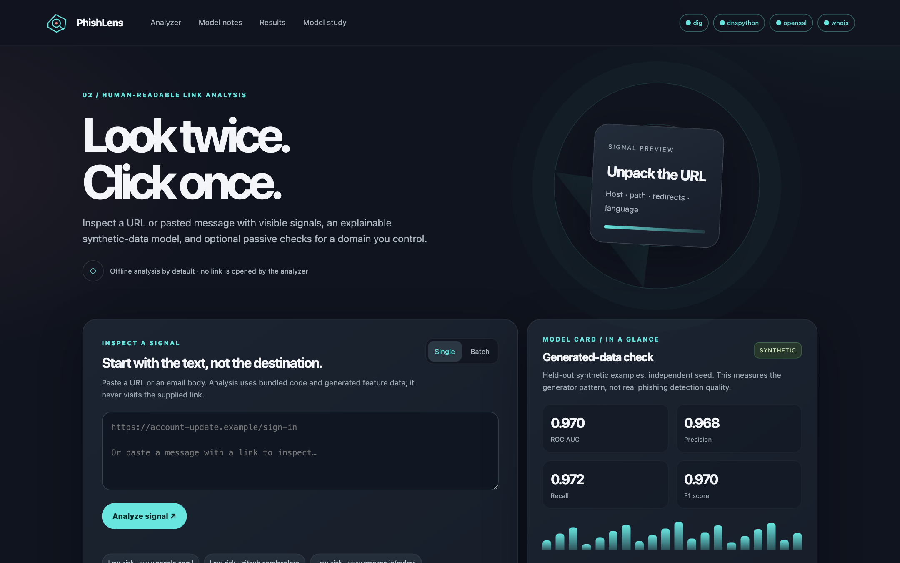
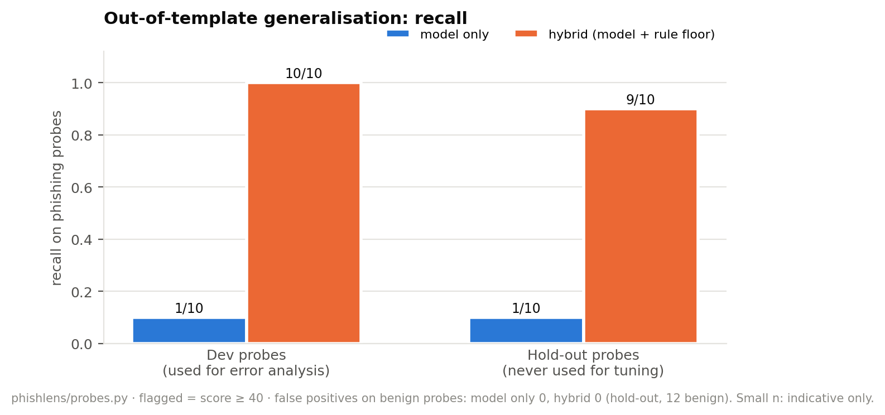
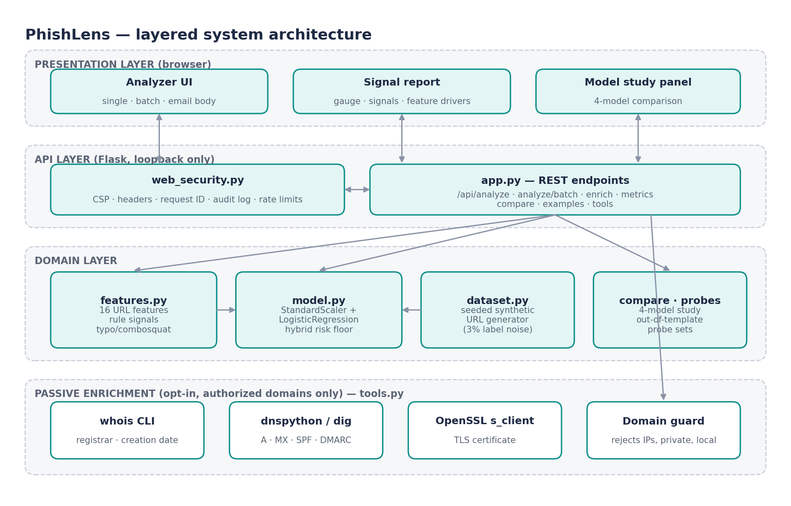
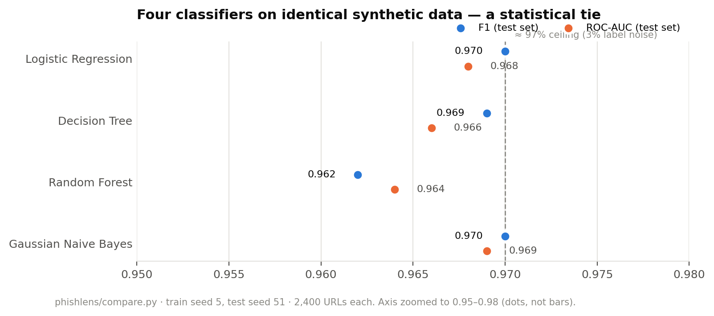
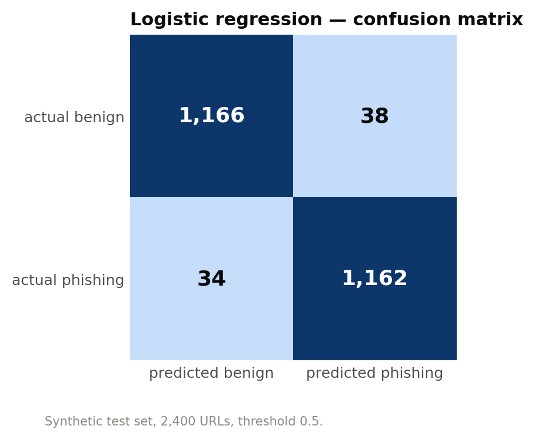

16 interpretable features
IP hosts, punycode, '@' tricks, TLDs, shorteners, redirects, entropy, keywords.
PhishLens explains every phishing verdict feature by feature, then asks the harder question: does it still work on attack styles it never saw? A transparent hybrid fixed what the model alone missed.

URL classifiers report high accuracy on test data that looks exactly like their training data.
Models learn shortcuts: correlates of phishing in the dataset, not phishing itself.
Explain every score, test on pre-registered unseen probes, fix with transparent rules.
Every score comes with the signals and per-feature contributions behind it.
IP hosts, punycode, '@' tricks, TLDs, shorteners, redirects, entropy, keywords.
Logistic regression: coefficient × standardised value, shown per feature.
paypa1, linkedln, hdfc-netbanking-kyc-update — detected as rule signals.
High-severity signals set a floor; the model's own score is still shown.
Four-model study plus development and hold-out probe sets.
Opt-in WHOIS, SPF/DMARC and TLS for domains you are authorized to check.
On a hold-out set fixed before the fix was designed, the hybrid raised recall from 1 to 9 of 10 phishing probes with zero false alarms on 12 benign URLs. Small sample, so indicative, not conclusive.


Synthetic test set of 2,400 URLs; the label-noise ceiling is about 97%.
| Model | F1 | ROC-AUC | 5-fold AUC |
|---|---|---|---|
| Logistic Regression | 0.970 | 0.968 | 0.970 ± 0.007 |
| Decision Tree | 0.969 | 0.966 | 0.963 ± 0.008 |
| Random Forest | 0.962 | 0.964 | 0.973 ± 0.008 |
| Gaussian Naive Bayes | 0.970 | 0.969 | 0.970 ± 0.005 |


Captured from the Docker build. Click to enlarge.
Requires Docker Desktop. Opens on loopback only.